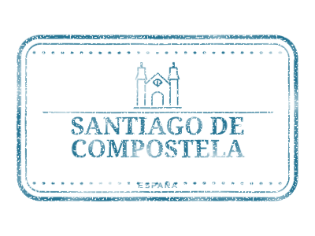

Destination · Galicia, Spain
Santiago de Compostela
Cathedral and scallop shell
- Country code
- ES
- Worn SVG
- 2.35 KB
- Clean SVG
- 1.49 KB


Use it in your project
Install @lucianopignotti/passport-stamps, then use the stamp in your framework or as a plain image.
Angular
import { PassportStampComponent } from '@lucianopignotti/passport-stamps/angular';
// Add PassportStampComponent to imports.
<passport-stamp country="ES" city="Santiago de Compostela" date="2026-11-07" />React
import { PassportStamp } from '@lucianopignotti/passport-stamps/react';
<PassportStamp country="ES" city="Santiago de Compostela" date="2026-11-07" />Web Component
<script type="module">
import { definePassportStamp } from '@lucianopignotti/passport-stamps/element';
definePassportStamp();
</script>
<passport-stamp country="ES" city="Santiago de Compostela" date="2026-11-07"></passport-stamp>HTML
<img src="/stamps/es-santiago-de-compostela.svg" alt="Santiago de Compostela — Cathedral and scallop shell" width="400" height="300">